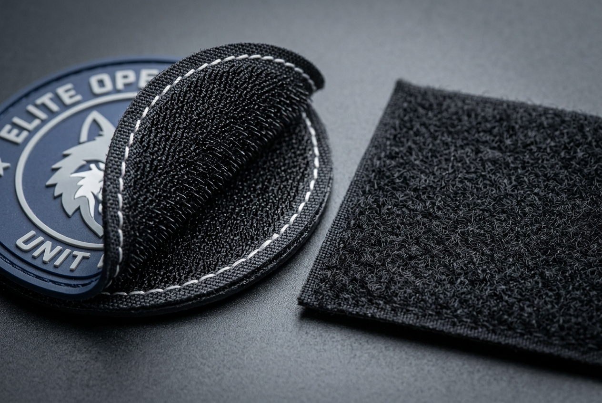

Velcro Patches: Tactical & Military Applications
Discover why custom Velcro patches (hook and loop patches) are the universal standard for military uniforms, tactical plate carriers, police gear, and morale patch collectors. Learn about materials, backing construction, placement standards, and care tips.

In the world of tactical equipment, law enforcement uniforms, and military operations, gear must adapt instantly to changing missions, unit assignments, and operational security requirements. Traditional sew-on patches—while permanent—do not allow personnel to swap unit insignia or strip rank identifiers on short notice. Enter custom Velcro patches (technically referred to as hook-and-loop fasteners), the indisputable gold standard for modular tactical gear.
Whether attached to military plate carriers, tactical baseball caps, combat shirts, or EDC backpacks, Velcro patches provide rugged durability, immediate peel-and-replace flexibility, and endless customization options. In this complete guide, we examine why Velcro patches are essential for tactical applications, compare popular material options, and detail best practices for patch placement and maintenance.
What Are Velcro Patches?
A Velcro patch consists of a custom patch face (which can be embroidered, woven, PVC rubber, or printed) backed with a specialized hook-and-loop fastening mechanism. The mechanism relies on two complementary components:
- Hook Backing (Male Side): Features hundreds of tiny, stiff plastic hooks securely stitched to the rear of the patch.
- Loop Panel (Female Side): Features a soft, fuzzy fabric pad made of dense microscopic loops attached directly to garments, vests, or gear.
When pressed together, the hooks grab the loops with firm shear strength. When pulled from the edge with peel force, the patch detaches cleanly without damaging the underlying fabric.

Why Velcro Is the Standard for Tactical & Military Gear
Armed forces worldwide—including the U.S. Army, Navy, Air Force, Marines, and NATO allies—have standardized hook-and-loop attachments on modern combat uniforms (such as the Army Combat Uniform / ACU and Operational Camouflage Pattern / OCP). Here is why Velcro patches dominate tactical environments:
1. Rapid Mission Reconfiguration
Operators frequently transition between training exercises, tactical deployments, and joint ops. Velcro backings allow personnel to swap blood type patches, call-sign tags, unit crests, and flag emblems in seconds without needle and thread.
2. Operational Security (OPSEC)
In covert operations or hostile territories where unit identity must be concealed, soldiers can instantly strip unit badges, division patches, and country flags to remain non-attributable.
3. Zero Damage to Technical Apparel
Modern tactical clothing utilizes waterproof GORE-TEX®, flame-resistant Nomex®, and moisture-wicking fabrics. Repeatedly sewing and seam-ripping patches creates needle punctures that compromise waterproof membranes. Velcro loop panels eliminate garment damage entirely.
4. Extreme Environment Resilience
High-grade nylon hook-and-loop backings operate reliably in freezing temperatures, scorching desert heat, torrential rain, and muddy crawl conditions where zippers or snaps might jam.
Types of Tactical Velcro Patches
Different operational demands call for different patch construction methods. Below are the primary styles of Velcro patches available from ChinaPatchFactory:
| Patch Type | Material | Durability | Best Tactical Use Case |
|---|---|---|---|
| 3D PVC Rubber Patches | Soft flexible PVC | ★ ★ ★ ★ ★ (100% Waterproof) | Outdoor gear, mud/rain operations, morale badges |
| Embroidered Patches | Rayon/Polyester thread | ★ ★ ★ ★ ☆ (Traditional) | Unit insignia, military rank, flag patches |
| Woven Patches | Fine woven thread | ★ ★ ★ ★ ☆ (Sleek/Flat) | Small call-sign tags, detailed crests |
| IR / Reflective Patches | Infrared film / Vinyl | ★ ★ ★ ★ ☆ (Specialized) | Friend-or-Foe (IFF) identification, night ops |
For high-intensity field use exposed to mud and heavy rain, PVC patches are often preferred because mud wipes clean with water, whereas thread patches can absorb grime.
Need custom backing options explained?
Read our full comparison guide on Patch Backing Options to evaluate iron-on, sew-on, and self-adhesive alternatives.
Morale Patches: Culture, History & Popularity
No discussion of tactical Velcro patches is complete without highlighting morale patches. Dating back to World War I & II military aviation units—where fighter pilots decorated their jackets with humorous or fierce mascot art—morale patches represent non-official insignia used to build squad camaraderie, humor, and personal identity.
Today, morale patches have exploded into mainstream culture across:
- Airsoft & Paintball Teams: Team logo emblems, tactical meme badges, and division rank tags.
- Everyday Carry (EDC) Enthusiasts: Custom Velcro patches attached to tactical sling bags, Maxpedition pouches, and laptop sleeves.
- First Responders: K-9 unit patches, SWAT badges, and fire department tactical teams.
- CrossFit & Gym Gear: Weight vest Velcro patches displaying motivational slogans and team logos.
Backing Attachment Mechanisms & Stitching Quality
Not all Velcro patch backings are created equal. In cheap commercial patches, the male hook backing is merely glued to the patch rear using thermal adhesive. Under hot sunlight or tactical stress, heat breaks down the glue, causing the backing to peel off.
At ChinaPatchFactory, we enforce strict tactical manufacturing standards:
- Perimeter Lock-Stitching: The male hook backing is double-stitched directly through the border of the patch (using heavy-duty nylon thread or reinforced merrowing).
- Optional Soft Loop Matched Set: Every Velcro patch order can include matching cut-to-size female loop fabric swatches that can be sewn onto non-Velcro jackets or bags.
Placement Guide for Tactical Velcro Patches
Where should you place Velcro patches on tactical gear for maximum utility and standard appearance?
1. Tactical Cap / Operator Hat
Standard operator hats feature a 2" x 3" loop panel on the front (for flag or morale patches), a 1" x 1" top loop panel (for IR strobe markers), and a 1" x 5" rear panel (for name tapes).
2. Combat Shirt / Uniform Sleeves
Bicep pockets on combat shirts typically provide 4" x 5" loop fields. The right sleeve traditionally holds national flags, while the left sleeve displays unit crests or morale badges.
3. Plate Carrier / Tactical Vest
Chest loop panels (3" x 6") hold rank insignia, agency identifier patches (e.g., POLICE, SHERIFF, EMT), and blood type markers.
4. MOLLE Backpacks & Gear Bags
Large exterior loop fields on tactical packs allow enthusiasts to display personal morale patch collections, unit patches, and reflective safety identifiers.
Care, Cleaning & Maintenance Guidelines
Keep your Velcro patches performing at peak grip strength with these maintenance steps:
- Remove Lint from Loop Panels: Over time, loop panels gather lint and loose fibers. Use a fine-tooth comb or stiff bristle brush to clean out debris and restore grip.
- Detach Patches Before Machine Washing: Always pull Velcro patches off jackets before laundering to prevent hooks from snagging surrounding knit garments.
- Store on Patch Display Boards: Store unused morale patches flat on a dedicated loop display mat to keep hook backings clean and unbent.
Frequently Asked Questions (FAQ)
Q1: Is Velcro patch backing reusable indefinitely?
Quality nylon hook-and-loop fasteners can withstand over 10,000 peel-and-attach cycles before experiencing noticeable grip degradation.
Q2: Does ChinaPatchFactory supply both the hook and loop sides?
Yes! Every custom Velcro patch automatically comes with the male hook side stitched on the back, and we can include matching female loop fabric panels upon request.
Q3: Can I get custom PVC morale patches with Velcro backing?
Absolutely. Custom 3D PVC patches with Velcro backing are among our top-selling products for tactical teams and morale patch collectors.
Q4: Are Velcro patches waterproof?
The nylon hook backing itself is 100% waterproof. When paired with PVC patch faces, the entire assembly withstands full water immersion without damage.
Q5: What is the minimum order quantity (MOQ) for custom tactical Velcro patches?
We have no minimum order quantity! You can order 1 custom sample proof or bulk production runs of 5,000+ pieces at factory-direct prices.
Conclusion
Custom Velcro patches deliver unmatched versatility, rugged durability, and instant adaptability for military units, police departments, airsoft teams, and gear enthusiasts. By choosing heavy-duty double-stitched hook backings paired with PVC or embroidered patch designs, your emblems will withstand the toughest tactical environments.
Ready to design custom Velcro patches for your squad or gear brand? Contact ChinaPatchFactory today for 12-hour free proofs and factory-direct wholesale pricing!
Ready to Order Custom Velcro Patches?
Get a free digital proof and competitive factory quote within 12 hours. No minimum order!
Get Free Quote